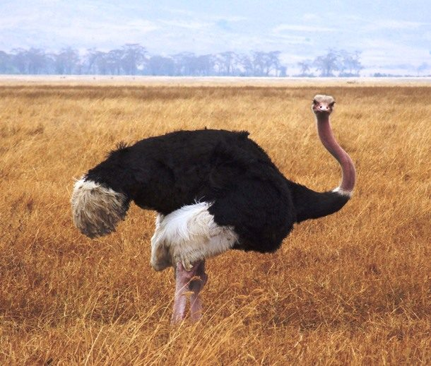
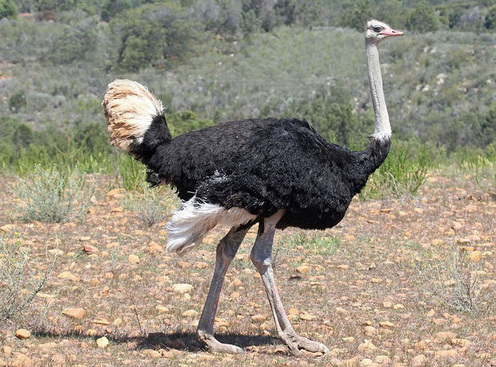

Nếu bạn đang tự hỏi đâu là loài chim lớn nhất trên thế giới thì khi nhìn bức ảnh này chắc bạn đã tìm thấy câu trả lời cho mình. Là loài chim lớn nhất và nặng nhất, Đà điểu Châu Phi có thể cao tới 2,7 m và nặng đến 160 kg. Là loài chim không bay được nhưng lại sở hữu những đôi chân to lớn và mạnh mẽ bất thường, điều này cho phép chúng có thể chạy với vận tốc lên tới 65 km / h (40 dặm / giờ). Đà điểu Châu Phi là động vật ăn cỏ chủ yếu, nhưng đôi khi chúng có thể ăn cả côn trùng.
Đà điểu châu Phi sống theo từng nhóm 5–50 con, du cư theo những loài thú ăn cỏ khác như ngựa vằn hay linh dương. Chúng ăn chủ yếu là hạt hay cây cỏ, đôi khi chúng ăn cả những động vật nhỏ như cào cào. Không có răng, chúng phải nuốt sỏi để giúp cho việc nghiền thức ăn trong mề. Chúng có thể đi trong một thời gian dài không cần đến nước, mà chỉ dựa vào độ ẩm của những cây cỏ chúng nuốt vào. Tuy nhiên chúng thích nước và thường hay tắm.
Với khả năng nghe và nhìn thính nhạy, chúng có thể phát hiện những loài thú săn mồi như sư tử từ khoảng cách xa.